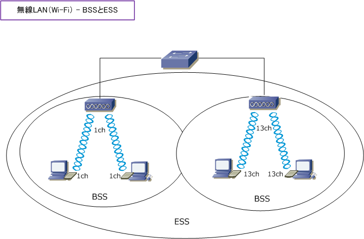
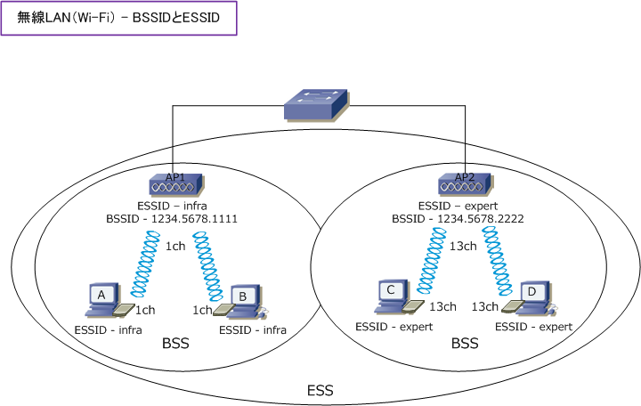
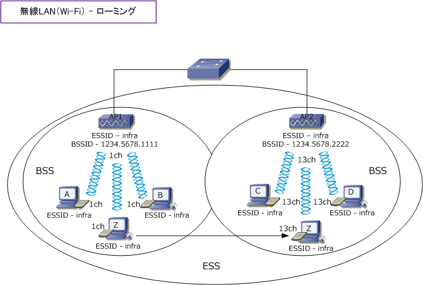
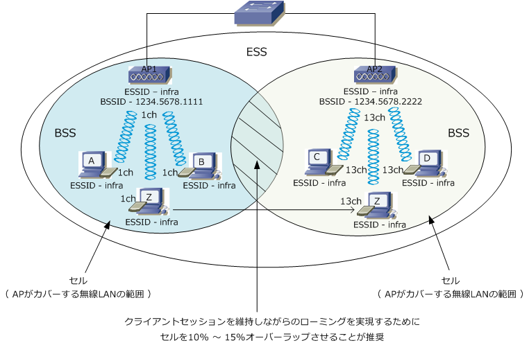

Wireless LAN - BSSID & ESSID
無線LAN - BSSとESS
無線LANのインフラストラクチャモードで、1つのAPとそのAPの電波内にいる配下の無線LANクライアント で構成されるネットワークを BSS（Basic Service Set）といいます。複数のBSSで構成される無線LANの ネットワークは ESS（Extended Service Set）といいます。これらのIDが無線LAN通信で重要となります。

無線LAN - BSSIDとESSID
BSSIDとは文字通りBSSのIDです。無線LANにおけるネットワーク識別子の1つであり48ビットの数値です。 このBSSIDは通常、その無線LANネットワークのアクセスポイントのMACアドレスと同じものとなります。 ESSIDとは文字通りESSのIDです。無線LANにおけるネットワークの識別子の1つであり最大32文字までの 英数字を設定できます。ESSIDは無線LANを構成する機器（APや無線LAN端末）に設定する必要があります。

無線LANでは、ESSIDが同じもの同士が通信することができます。ESSIDが異なっている場合、無線LANの 電波がお互いに届く範囲であっても、伝送規格や周波数が同じであっても無線LAN間での通信はできません。 ※ ESSIDにはどのAPにも接続できるANYという特殊なESSIDもありますが、AP側でこの機能を無効にしておくことが一般的。
上図で、AとBのWLAN端末がAP2の電波内にいてチャネルが 13ch でも、AP2と無線LAN接続ができません。 同じように、CとDのWLAN端末がAP1の電波内にいてチャネルが1chでも、AP1と無線LAN接続ができません。 このように、ESSIDによる識別によって意図した無線LAN機器とだけ通信できるようになり混信を防止します。
無線LAN - SSIDとESSIDの違い
SSIDとは無線LANにおけるアクセスポイントの識別子です。ESSIDとは、アクセスポイントの識別子である SSIDを複数のアクセスポイントを設置したネットワークにおいても使用できるように拡張した識別子のこと。
このように厳密にはSSIDとESSIDの意味は異なりますが、本来、ESSIDの意味であるにも関わらず、SSIDの 用語が使用されているケースが多いです。現在の企業ネットワークにおける無線LAN導入の実態を考えますと、 無線LAN導入に１台だけのAP導入というケースは少なく「ESSID」を識別子として使用していることが一般的。 ※ WindowsのバージョンによりSSIDやESSIDの設定項目が「ネットワーク名」という名称になっています。
無線LAN - ローミング
無線LANにおいて、ローミングとは無線LANクライアントが異なるAP間を渡り歩けるような機能のことです。 例えば下図の通り、AP1の電波の届く範囲内にいたWLAN端末「Z」が、AP2の電波の届く範囲内に移動した 場合でも通信が可能である状態をローミングといいます。このローミングの前提として渡り歩く範囲のAPの ESSIDは全て同じであることが必要です。また、使用するチャネルにおいても接続するAPと同じである必要が ありますが、最近の無線LAN端末は「使用するチャネルを自動検出」するのでチャネルの手動設定は不要です。

無線LANクライアントがセッションを切らずにローミングができるよう、異なるチャネルのセルを10％～15％ オーバーラップさせることが推奨されます。無線LANスイッチ（コントローラ）はこのオーバーラップの範囲 を自動調整しますが、無線LANスイッチを導入しない場合は電波調査を行い適切な場所にAPを設置しましょう。 ※ 現在の企業ネットワークで無線LANスイッチ（コントローラ）を導入しないことは、ほとんどありません。

※ 有線LAN側のネットワークと継続的な論理接続が維持するローミングにおいても、ローミング時にはAPとの再認証が発生します。 ※ 無線LANスイッチを導入した場合、認証方式がWeb認証であっても802.1X認証であってもローミング時に再認証は発生しません。 なぜなら、認証成功時の情報を無線LANスイッチに記憶しており、ローミング時にこの情報を利用するので再認証が発生しません。